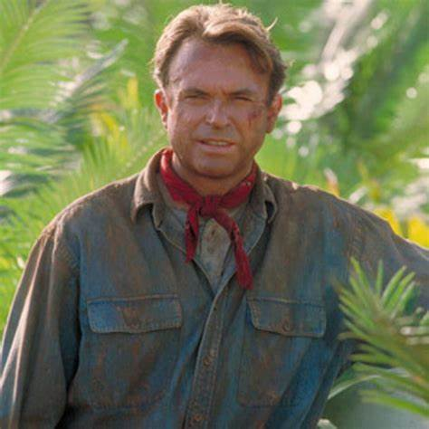

Profile
Name: Dr. Alan Grant
Age: 53 (as of *Jurassic Park III*)
Occupation: Paleontologist
Specialty: Dinosaur Fossils
Character Background
Dr. Alan Grant is a famous paleontologist and one of the key protagonists in the Jurassic Park franchise. He is an expert in dinosaur fossils and has a deep love for dinosaurs.
Grant is a highly skilled and respected scientist. He is introduced in Michael Crichton’s novel "Jurassic Park" and is portrayed by Sam Neill in the film adaptation.
Key Appearances
- Jurassic Park (1993)
- Jurassic Park III (2001)
- Jurassic World: Dominion (2022)
Famous Quote
"The world has just changed so radically, and we're all trying to catch up." – Dr. Alan Grant, Jurassic Park (1993)